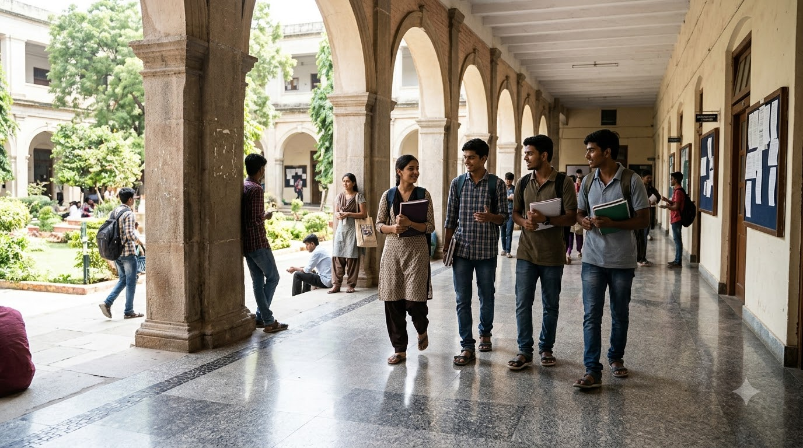
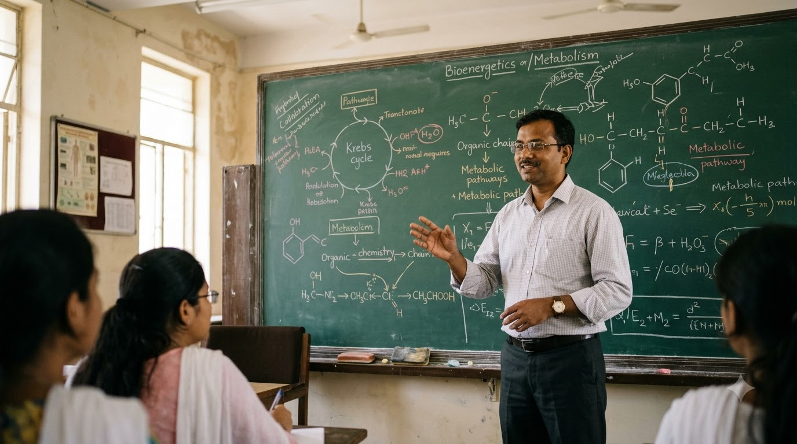

Committed to Intermediate Biological Sciences
Intermediate education represents the pivotal phase when high school learners transition into specialized scientific thinking. Our Junior College curriculum centers entirely on the BiPC stream—Botany, Zoology, Physics, and Chemistry.
By concentrating on this specific discipline group, we provide a focused atmosphere where students interested in medicine, biological research, pharmacology, biotechnology, and agricultural science can dedicate themselves fully to conceptual mastery and laboratory application.
We treat science not merely as a textbook subject, but as an empirical language. Our teaching cultivates precise observation, structured diagramming, logical deduction, and sustained intellectual focus.

Our Vision
To be a benchmark institution in Intermediate BiPC education that nurtures scientific curiosity, deep biological understanding, and ethical commitment in young scholars aspiring to contribute to healthcare, science, and society.
Our Mission
To provide a structured academic foundation through concept-driven teaching, rigorous laboratory work, individual student mentorship, and systematic competitive entrance orientation without compromising board examination excellence.
Our Educational Philosophy
We believe Intermediate science learning flourishes when theory and practical exploration reinforce each other continuously.
1. Conceptual Primacy
Rather than memorizing isolated answers, students explore the core biochemical pathways, physical mechanics, and structural adaptations of organisms.
2. Diagrammatic Fluency
Biological sciences demand visual precision. Students are coached to draw, label, and analyze complex anatomical systems and plant structures with accuracy.
3. Regular Formative Practice
Continuous short evaluations, weekend revisions, and chapter-end quizzes ensure concepts remain fresh and learning gaps are recognized early.
4. Integrated Practical Sessions
Laboratory experiments are held in tandem with classroom theories, allowing students to observe under the microscope what they read in the textbook.
5. Supportive Mentorship
Small peer mentor circles offer a safe space for students to ask questions, clarify doubts, and receive personalized advice on study schedules.
6. Ethical & Scientific Temper
Instilling reverence for nature, ethical scientific research practices, and social responsibility in future doctors and biological researchers.

Academic Discipline & Parent Engagement
Success in Intermediate science programs requires consistent attendance, structured study routines, and strong coordination between the college and parents.
We maintain regular communication through parent-teacher meetings, periodic student progress evaluations, and attendance tracking. This transparent ecosystem keeps parents well-informed about their ward’s academic growth.